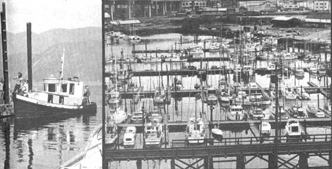

RIGHT: The boat we were looking for and which our systematic search of the B.C. coast turned up. Our prize is a 33-foot diesel tug, 25 years old and just fine. A spectacular (and probably near-unrepeatable) bargain at $975, fully equipped. Ain't she pretty as she ""serves the people"" in Deep Cove, B.C., near Vancouver. FAR RIGHT: The Fisheries Wharf in Vancouver's False Creek. There is more docking space in Vancouver than anywhere else in B.C. and this is a good place to start a boat hunt in the province. Remember, however, that any search for a bargain watercraft must be exhaustive. The one-of-a-kind buy you have in mind may well be hidden away by itself far from ""regular"" wharves or docks.